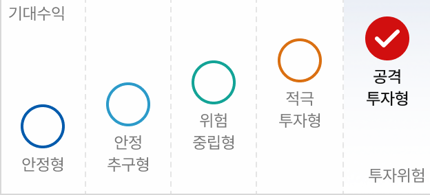

이전화면으로
투자자성향진단
전체메뉴
$성명$
님의 투자자성향은
공격투자형
입니다.
투자자성향 진단일 YYYY.MM.DD
투자자성향진단
결과 보기
투자자성향진단
다운로드
투자자성향에 적합한 상품 위험등급
1등급
2등급
3등급
4등급
5등급
6등급

투자자성향 및 펀드 위험등급 안내
성향진단 다시하기
투자자성향진단 사용 횟수 : 3회 중
$사용횟수$
회 (금일 기준)
알아두세요
펼치기
투자자성향진단은 고객님의 투자자성향을 파악해 적합한 상품을 안내해 드리기 위한 기초 자료로 활용됩니다.
고객님의 투자자성향보다 높은 등급의 상품은 가입할 수 없습니다.
투자자성향진단은 대면, 비대면 통합하여 1일 3회(대면은 1회) 할 수 있습니다.
투자자성향진단결과는 12개월 동안 이용할 수 있습니다.
투자자성향이 변경되지 않았다면 결과를 다시 이용할 수 있고, 투자자성향이 변경되었다면 투자자성향을 다시 진단해 주세요.
투자자성향진단 결과는 고객님의 연락처로 문자(LMS) 안내해드립니다. 문자메시지를 받지 못하신 경우 NH농협은행 고객행복센터(1661-3000)로 문의해 주세요.
확인